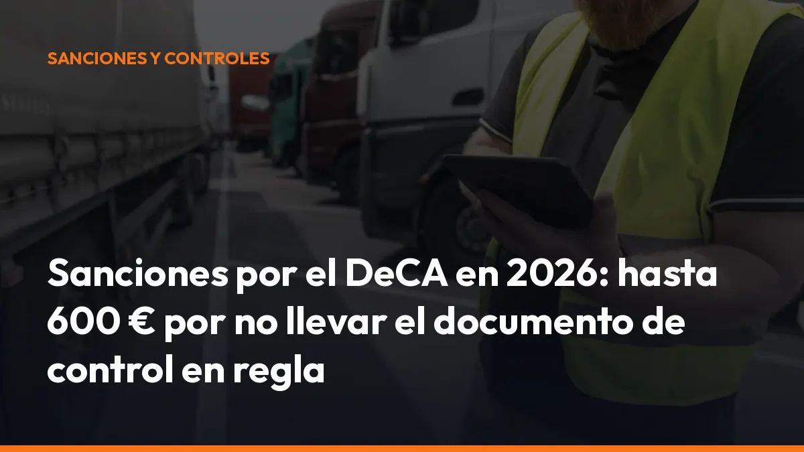

Sanciones por el DeCA en 2026: hasta 600 € por no llevar el documento de control en regla

Si circulas sin DeCA, con datos incompletos o con información falsa, puedes enfrentarte a una sanción de entre 401 y 600 € por transporte.
La solución es sencilla: genera el documento antes de iniciar la ruta, llévalo en tu móvil y muéstralo directamente durante el control.
¿Qué es el DeCA y por qué será obligatorio?
El DeCA es el documento electrónico de control administrativo del transporte de mercancías. Sustituye al documento de control en papel y permite acreditar los datos principales de cada porte.
La obligación de digitalización se basa en:
- La Ley 9/2025, de 3 de diciembre, de Movilidad Sostenible.
- La disposición transitoria octava de dicha ley.
- La Orden FOM/2861/2012, que regula el documento de control administrativo.
- La Resolución de 5 de junio de 2026, que fija los requisitos técnicos del documento digital.
La Ley 9/2025 entró en vigor el 5 de diciembre de 2025. Diez meses después, el 5 de octubre de 2026, el documento de control deberá ser necesariamente digital.
Esto significa que, desde esa fecha, no basta con llevar una hoja impresa en la cabina. Necesitas un documento electrónico válido, accesible y preparado para su comprobación. Haz el cambio antes de la primera inspección. Adaptarte hoy te evita errores, prisas y sanciones en carretera.
¿Cuáles son las sanciones por el DeCA en 2026?
Las infracciones relacionadas con el documento de control administrativo se consideran graves cuando falta el documento o no contiene la información exigida.
La multa puede ser de:
401–600 € por cada transporte
No se trata de una sanción única para toda la empresa. La inspección puede considerar cada expedición como un transporte independiente.
Por ejemplo:
- 1 transporte sin DeCA: hasta 600 €.
- 5 transportes sin DeCA: hasta 3.000 €.
- 10 transportes con datos incorrectos: hasta 6.000 €.
Por eso, revisar la documentación de cada porte es una tarea esencial. Un error repetido puede multiplicar rápidamente el coste para tu empresa.
Estos son los incumplimientos más habituales
- No disponer del DeCA: inicias el transporte sin haber generado el documento digital.
- Llevar solo el documento en papel: desde el 5 de octubre de 2026, el papel ya no sustituye al DeCA.
- Datos incompletos: falta el cargador, el transportista, el origen, el destino, la mercancía, el peso, la fecha o la matrícula.
- Datos falsos: la información del documento no coincide con el transporte real.
- Documento creado tarde: generas el DeCA después de comenzar el servicio.
- QR no operativo: el código no permite consultar o descargar el documento.
- Acceso bloqueado: el agente necesita usuario, contraseña o pasos intermedios para revisar el archivo.
La clave es generar un documento completo antes de que el vehículo salga. Así reduces errores y puedes responder al control directamente desde la cabina.
¿Qué datos debe incluir el documento de control administrativo?
La Orden FOM/2861/2012 establece los datos principales que deben aparecer en el documento de control.
Antes de iniciar cada servicio, comprueba estos campos:
- Cargador contractual: nombre o razón social, NIF y domicilio.
- Transportista efectivo: nombre o razón social y NIF.
- Origen: lugar donde comienza el transporte.
- Destino: lugar de entrega de la mercancía.
- Mercancía: naturaleza y peso transportado.
- Fecha: día en que se realiza el servicio.
- Vehículo: matrícula del camión y, cuando corresponda, del remolque o semirremolque.
- Autorización especial: identificación de la autorización, si el transporte la necesita.
- Observaciones: información adicional que las partes quieran dejar registrada.
Cada dato cumple una función concreta. El origen y el destino permiten verificar la ruta. La matrícula vincula el porte con el vehículo. La mercancía y el peso ayudan a comprobar que la información coincide con la carga real.
Rellena todos los campos antes de salir. No esperes a estar en un control para descubrir que falta un dato obligatorio.
¿Qué formato debe tener el DeCA para ser válido?
No cualquier archivo digital sirve. El documento debe cumplir unos requisitos técnicos concretos.
El DeCA debe ser:
- PDF nativo digital: creado directamente por una aplicación, no escaneado ni fotografiado.
- Legible: la información debe poder consultarse con claridad.
- Inferior a 5 MB: el archivo debe mantenerse dentro del límite establecido.
- Con código QR: el QR debe estar integrado en el propio PDF.
- Con URL única: el código debe dirigir al documento concreto.
- Descargable directamente: el enlace no debe exigir registro, contraseña ni páginas intermedias.
- Disponible por HTTPS: el acceso debe realizarse mediante una conexión segura.
- Con fecha y hora de creación: los datos deben quedar registrados para acreditar cuándo se generó.
- Conservado durante al menos un año: debes poder acceder al documento durante el periodo exigido.
- Disponible para el conductor: el transportista debe llevar una copia accesible antes de iniciar el servicio.
Un PDF escaneado, una fotografía de una hoja o un enlace que no funciona pueden impedir la comprobación durante la inspección.
Con Mi Carga, generas el PDF nativo con QR desde el móvil o desde el navegador. El documento queda archivado y puedes descargarlo o mostrarlo cuando lo necesites.
¿Quién debe asegurarse de que el DeCA esté correcto?
La obligación afecta a los participantes del transporte.
El cargador contractual
Debe aportar o facilitar los datos necesarios para formalizar correctamente el documento. Si proporciona información incompleta, el DeCA puede quedar mal cumplimentado.
El transportista efectivo
Debe comprobar que el documento existe, que corresponde al porte y que el conductor puede mostrarlo durante el trayecto.
El conductor
Debe llevar el DeCA disponible antes de iniciar el servicio. En un control, tendrá que acceder al documento desde el móvil o presentar la copia correspondiente con su código QR.
La mejor forma de evitar discusiones y errores es trabajar con un único sistema. Así, el documento que se genera en la oficina queda disponible para la persona que conduce.
¿Cómo generar el DeCA con Mi Carga?
Crear un documento de control digital no tiene por qué complicarte la jornada.
Sigue estos pasos:
1. Crea tu cuenta: regístrate con tu correo y tus datos de transportista. 2. Introduce los datos del porte: añade cargador, transportista, origen, destino, mercancía, peso, fecha y matrícula. 3. Revisa la información: comprueba que todos los campos coinciden con el servicio real. 4. Genera el PDF: Mi Carga crea el documento digital al instante. 5. Muestra el QR: enseña el código desde el móvil si te lo solicita el agente. 6. Guarda el documento: el sistema conserva el archivo para futuras consultas.
No necesitas pasar por una tienda, imprimir formularios ni esperar a que una gestoría prepare cada documento.
¿Qué obtienes con Mi Carga?
- Generación instantánea: crea el DeCA en pocos segundos.
- PDF nativo: documento digital preparado para su uso.
- Código QR operativo: facilita la comprobación en carretera.
- Archivo automático: conserva tus documentos en la nube.
- Acceso desde cualquier lugar: trabaja desde la cabina, la oficina o tu casa.
- Descarga directa: guarda copias en PDF, CSV o Excel.
- Trazabilidad: registra la creación y las modificaciones del porte.
- Documentos sin límite: genera tantos como necesites con la suscripción.
Mi Carga frente a las alternativas por documento
Si pagas por cada porte, el coste aumenta con cada expedición. Si utilizas formularios manuales, el riesgo de error permanece.
Con Mi Carga tienes:
10 documentos de prueba gratis
Después, puedes elegir:
10 €/mes + IVA
o
90 €/año + IVA
La suscripción permite generar documentos ilimitados, sin créditos ni bolsas de expediciones. El plan anual equivale a 7,50 €/mes y te ahorra tres mensualidades.
No hay costes ocultos. No necesitas contratar permanencia y puedes cancelar cuando quieras.
Solicita tus 10 transportes gratis
Checklist antes de salir a ruta
Antes de arrancar, dedica unos segundos a esta comprobación:
- ¿Has generado el DeCA antes de iniciar el transporte?
- ¿El PDF es nativo y legible?
- ¿Aparecen el cargador y el transportista?
- ¿Has indicado origen y destino?
- ¿La mercancía y el peso son correctos?
- ¿La fecha coincide con el servicio?
- ¿La matrícula está bien escrita?
- ¿El código QR funciona?
- ¿El documento se descarga sin contraseña?
- ¿El conductor puede acceder al archivo desde el móvil?
Si todas las respuestas son afirmativas, estarás mejor preparado para un control.
Adáptate antes del 5 de octubre de 2026
La fecha es clara: 5 de octubre de 2026.
Desde entonces, circular sin documento de control administrativo digital, con datos incompletos o con información falsa puede suponer una multa de 401 a 600 € por transporte.
No esperes a que una inspección te obligue a cambiar. Genera el DeCA desde el móvil, conserva tus documentos y muestra el QR al instante.
Rápido. Digital. Sin complicaciones.
Empieza hoy con 10 documentos gratis
Si tienes una flota o necesitas varias cuentas, solicita un presupuesto para tu empresa. Si necesitas ayuda, escríbenos por WhatsApp.
¿Hablamos?
Preguntas frecuentes sobre las sanciones por el DeCA
¿Cuándo será obligatorio el DeCA?
El documento electrónico de control administrativo será obligatorio desde el 5 de octubre de 2026 para el transporte público de mercancías por carretera incluido en la obligación normativa.
¿Cuánto es la multa por no llevar el DeCA?
La sanción puede ser de 401 a 600 € por cada transporte cuando no existe el documento, faltan datos esenciales o la información es incorrecta o falsa.
¿El documento en papel seguirá siendo válido?
No. Desde el 5 de octubre de 2026, el documento de control deberá estar disponible en formato digital. Llevar únicamente el documento en papel no será suficiente.
¿El DeCA debe tener un código QR?
Sí. El PDF debe incluir un código QR asociado a una URL única que permita consultar o descargar el documento directamente.
¿Cuánto tiempo debo conservar el documento?
El DeCA debe mantenerse disponible durante un mínimo de un año.
¿Puedo generar el DeCA desde el móvil?
Sí. Con Mi Carga puedes crear el documento desde el móvil, el navegador o la oficina, descargar el PDF y mostrar el código QR durante una inspección.
¿Cuánto cuesta Mi Carga?
Puedes probar la plataforma con 10 transportes gratis. Después, el plan mensual cuesta 10 € más IVA y el anual 90 € más IVA, con documentos ilimitados.
Genera tus 10 primeros documentos gratis con Mi Carga
DeCA, carta de porte y ADR, en PDF, con QR y archivo automático en la nube.
Empezar con 10 documentos gratisArtículo informativo. Consulta siempre el caso concreto de tu operación. ¿Dudas? Escríbenos.